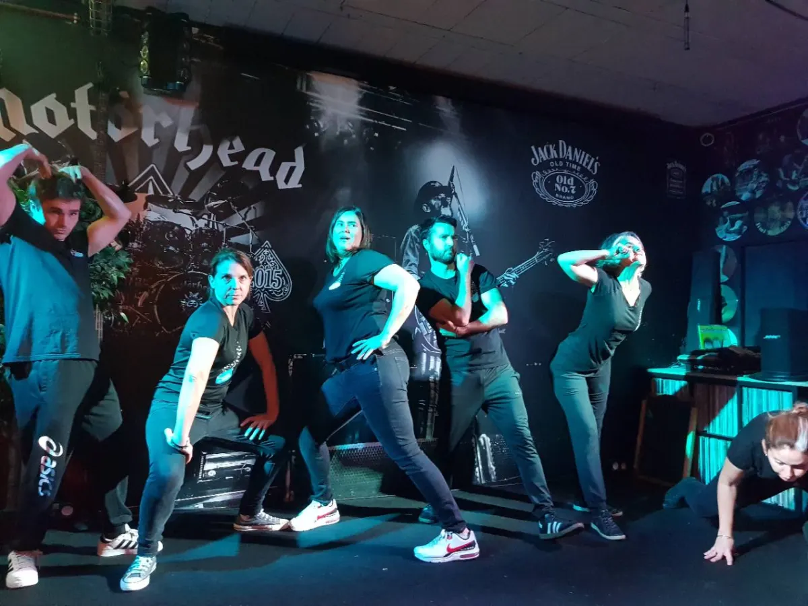

Agenda de La Malice
Publication du 13 novembre 2026
Théâtre d’improvisation
Mouvement Artistique et Ludique d’Improvisation Carrément Effervescent !
Une troupe de théâtre d’improvisation amateur sur la côte basque et au-delà depuis 2016.
Voir les dates
La troupe
La Malice est une troupe de théâtre d'improvisation amateur qui propose des spectacles sur la côte basque et au delà depuis 2016.
Nous recevons plusieurs fois par an d'autres troupes pour organiser les fameux matches d'impros qui rassemblent des centaines de spectateurs. Mais nous proposons également d'autres formats comme des cabarets qui rencontrent également un franc succès !
Humour, énergie et un grain de folie sont les ingrédients de la recette de la Malice qui fait mouche à chaque fois. Venez-nous voir, vous ne le regretterez pas !
Restons en lien
Suivez la troupe et retrouvez nos liens utiles :